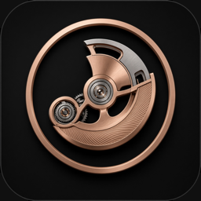

Rotorfolio
Watches before they are yours.
Last updated: 3 September 2026
Rotorfolio is an app for keeping a private record of a watch collection. It was built so that this policy could be short.
Rotorfolio collects nothing. There is no account, no analytics, no advertising, no tracking, and no server holding a copy of anything you enter. Everything you put into the app stays on your device.
Everything you enter — watches, references, notes, prices, currencies, serial numbers, boutiques, salespeople, dates, accuracy readings and the photographs you take or choose — is written to the app’s own private storage on your device.
None of it is transmitted anywhere. It is included in your device’s iCloud or computer backup if you have backups switched on, in which case it is covered by Apple’s terms and not by anything the developer controls.
You can export all of it at any time as a JSON file to a location you choose in the Files app. That export is yours; the app does not upload it.
Only when you choose to photograph a watch. Photographs are saved into the app’s own storage.
When you choose a picture for a watch, the system photo picker runs outside the app and hands over only the image you selected. The app cannot see the rest of your library.
Only if you set a check-in reminder for a watch you are waiting on. Reminders are scheduled locally on the device. Nothing is sent through any server, including Apple’s push service.
Each permission is requested at the moment you first use the feature that needs it, and refusing one disables only that feature.
The app makes one kind of outbound request. When you look up a watch reference that is not in the bundled catalogue, that reference — and nothing else — is sent to The Watch Info to retrieve specification data. No identifier, no account and no device information beyond what any HTTPS request necessarily carries is included, and the developer receives no record of it. Their handling of that request is governed by their own policy.
Every other part of the app works with the device offline.
Nothing. There is no analytics SDK, no crash reporting service, no advertising framework, and no third-party code that transmits anything. The developer has no way of knowing what is in your collection, or that you use the app at all.
Apple provides the developer with aggregate, anonymous App Store statistics — download counts and similar — which are produced by Apple and contain no information about you.
The app is rated 4+ and is suitable for all ages. It collects no personal data from anyone, children included.
Under the Swiss Federal Act on Data Protection and the GDPR you have rights of access, correction, deletion and portability over personal data a controller holds about you. The developer holds none, so there is nothing to request.
The data on your device is under your control: edit or delete any of it in the app, export it from the collection menu, and remove all of it by deleting the app.
If a future version of the app changes what is described here, this policy will be updated before that version ships, and the date at the top will change with it.
Questions about this policy go to that address, or through the support page.